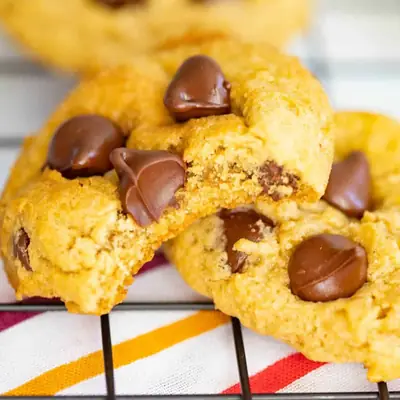

Vegan Pumpkin Chocolate Chip Cookies

Ingredients
- 1/2 cup vegan butter (softened)
- 1/2 cup dark brown sugar (packed)
- 1/2 cup cane sugar
- 2 tsp vanilla extract
- 1/3 cup pumpkin puree
- 2 cups all-purpose flour
- 1/2 tsp salt
- 1 tsp baking soda
- 2 tsp pumpkin pie spice
- 2 tbsp corn starch
- 1 cup dark chocolate chips (dairy-free or vegan)
Steps
- Preheat the oven to 375 F. In a large mixing bowl cream the softened butter for about 1 minute using a stand mixer with a paddle attachment, or hand-beaters.
- Add the brown sugar, the cane sugar, and the vanilla extract. Beat together for another 1-2 minutes. Add in the pumpkin puree. Continue to beat until combined. Scrap the edges of the bowl so that the wet ingredients are at the bottom of the bowl.
- In a medium mixing bowl, whisk together the flour, salt, baking soda, corn starch, and pumpkin pie spice.
- Turn the stand mixer on low, and slowly add the flour until it is completely incorporated. The batter will be thick. Remove the paddle attachment.
- Remove the paddle attachment and add in 3/4 of a cup of the chocolate chips. Fold the chocolate chips into the batter using a spatula. (Reserve a 1/4 cup of the chocolate chips.)
- Line a baking sheet with parchment paper. Using a cookie scoop, scoop 2 tablespoons of dough ball of dough. Leave a few inches of space between each cookie. They will spread as they bake.
- Bake in the preheated oven for 9-10 minutes or until the edges are golden brown and the center is set. Press the remaining chocolate chips on the top of each mound of dough. Allow the cookies to cool for 10 minutes on the baking sheet. Then transfer them. toa cooling rack to cool completely. Enjoy!
Recipe by Anjali Shah · The Picky Eater, from The Picky Eater. Saved here for personal use; the original has the full notes, tips and photos. Open original